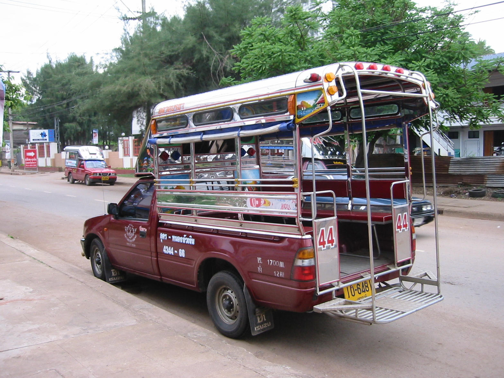
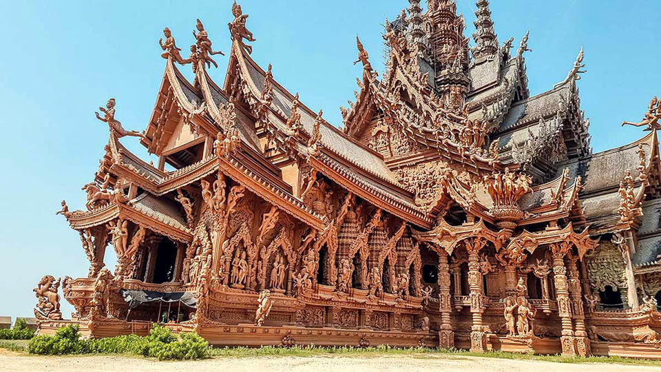
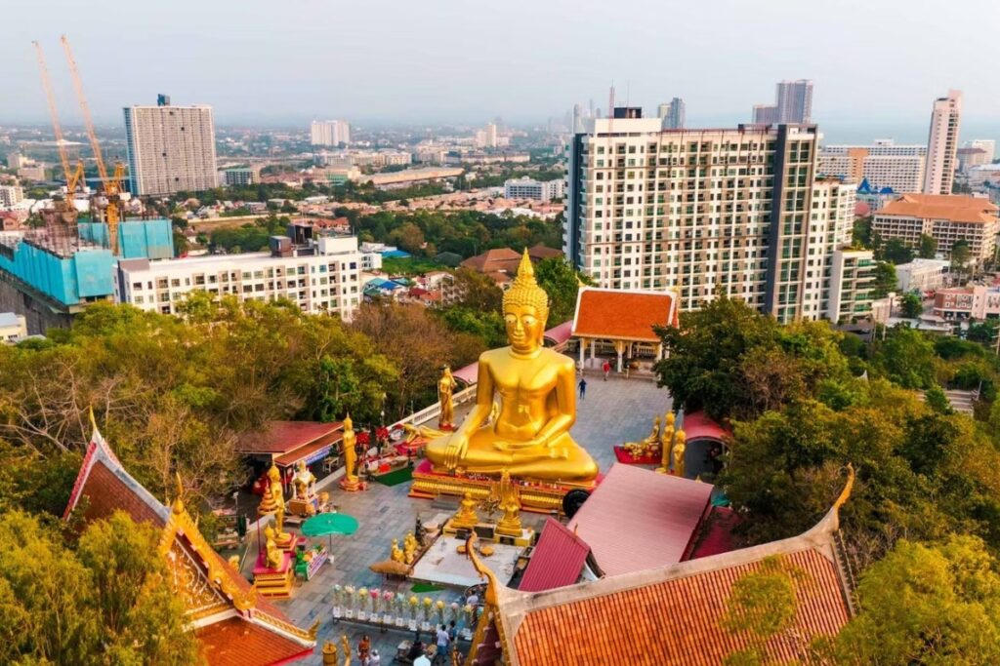
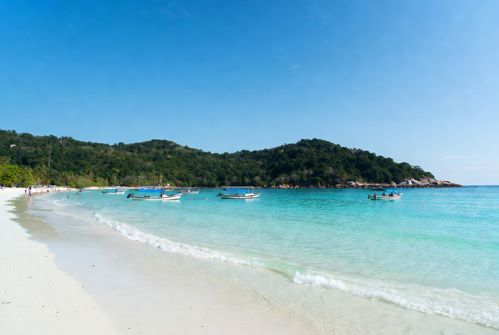
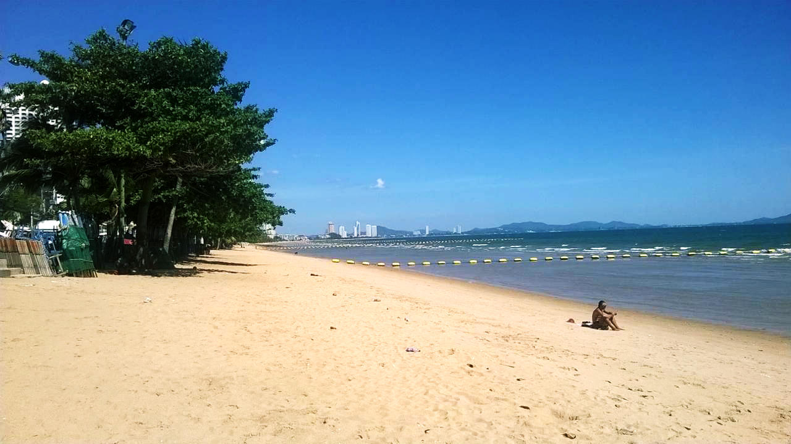
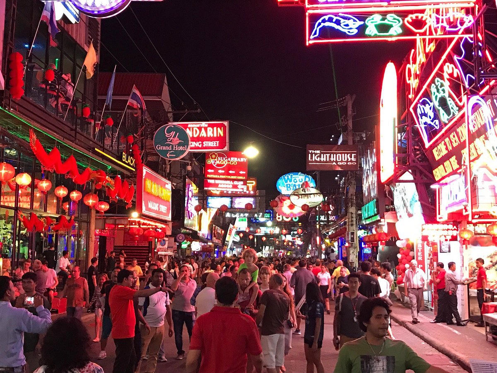
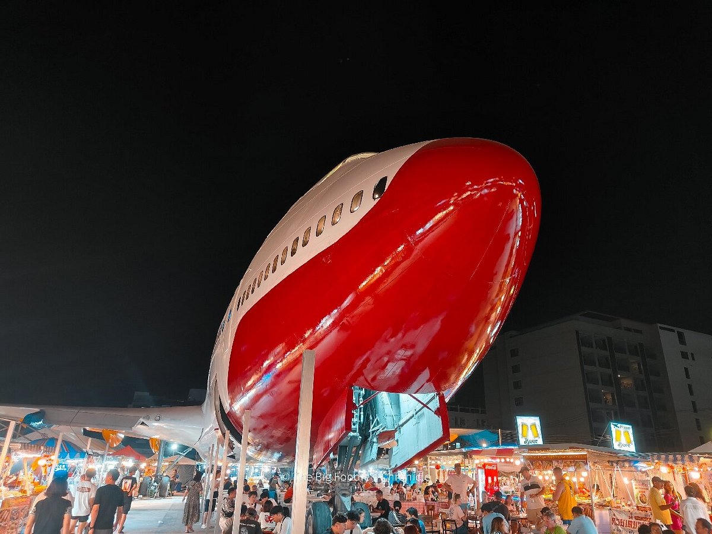
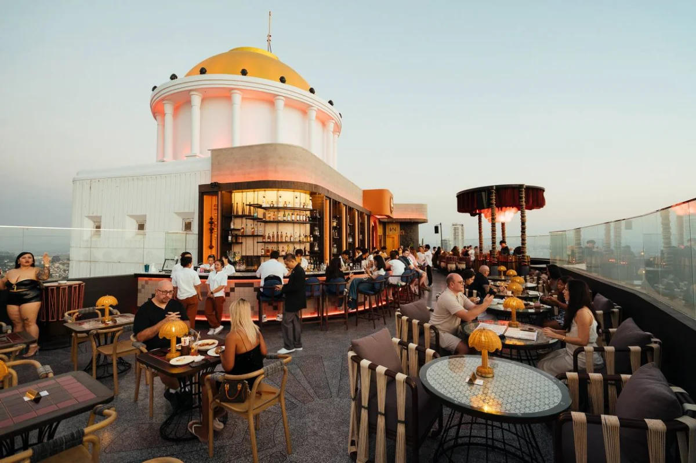
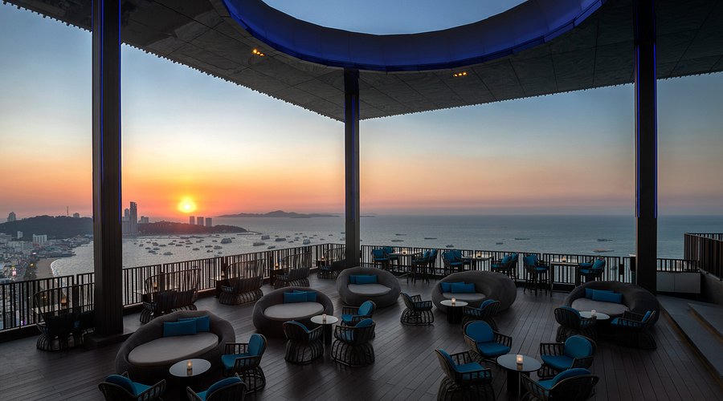
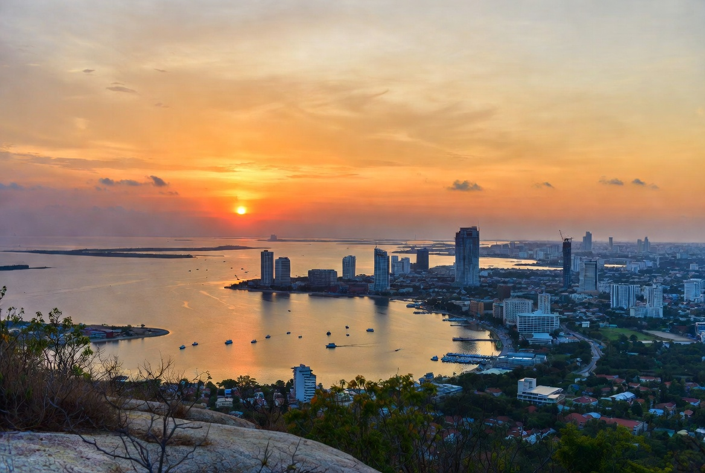

Guide • First-Time Pattaya
Discovering the Real Pattaya: A First-Timer's Guide Beyond the Reputation
Scenic beaches, hilltop temples, island escapes, great malls, and local flavors that most visitors never properly explore.
By Genext Information Systems Staff
Published 19 July 2026 • 18 min read

Pattaya's coastline looks far more inviting from above than its nightlife reputation suggests.
Pattaya has carried a certain reputation for decades. Mention the name and many people immediately picture neon lights, Walking Street after midnight, and a non-stop party scene. That side of the city certainly exists and it draws its own enthusiastic crowds every night of the week. But if that is all you experience, you miss the much larger and more interesting Pattaya — the one with long stretches of beach in Jomtien, sweeping viewpoints over the Gulf of Thailand, an extraordinary wooden temple that has been under construction for decades, a short ferry ride to clearer water at Koh Larn, and two of the best modern shopping malls on the Eastern Seaboard.
This guide is written for first-time visitors who want the full picture rather than the stereotype. We cover practical arrival options from Bangkok's Suvarnabhumi Airport, the easiest ways to get around once you are here, the places actually worth your time (with realistic notes on crowds and prices), side trips, restaurants, rooftop bars, and the handful of things worth avoiding. The goal is simple: help you see the scenic, cultural, and everyday side of Pattaya that is too often overlooked by people who only stay for the nightlife.
Getting from Suvarnabhumi Airport (BKK) to Pattaya
The journey from Bangkok's main international airport to Pattaya takes roughly 1.5 to 2 hours depending on traffic and the time of day. You have two practical, reliable options: the public airport bus or a pre-arranged private transfer. Both work well; the choice depends on budget, luggage, and how tired you are after the flight.
Option 1: The Airport Bus (Level 1 / Lower Floor)
After clearing immigration and collecting your bags on the arrivals level, take the escalator or elevator down to Level 1 (the ground floor). Look for the clearly signed counters near Gate 8 for buses to Pattaya. The two main operators are Roong Reuang Coach and Bell Travel Service. Both run air-conditioned coaches on a regular schedule.
- Price: 140–220 Thai Baht per person (approximately $4–6.50 USD).
- Frequency: Multiple departures throughout the day from early morning until around 22:00. Roong Reuang usually has the higher frequency.
- Duration: About 2 hours to the North Pattaya bus terminal or the Jomtien terminal, depending on the service.
Pros
- Extremely cheap
- Comfortable air-conditioned coaches
- No need to book far in advance
- Straightforward once you find the counter
Cons
- You still need a short Bolt or Baht Bus ride from the terminal to your accommodation
- Possible short wait if you just miss a departure
- Less convenient with a lot of luggage or a very late arrival
Once you arrive at the Pattaya terminal, open Bolt and request a car to your hotel. The ride is usually only 10–20 minutes and costs very little.
Option 2: Private Car or Van Transfer
Many first-timers prefer the simplicity of a private transfer, especially after a long-haul flight. You book in advance online or through a reputable local company. The driver meets you in the arrivals hall with a name sign and takes you directly to your accommodation.
- Price: Door-to-door private transfers commonly start around 1,200 Thai Baht for a standard car (~$34 USD). Larger vans or bigger groups are typically in the 1,800–2,200 THB range (~$51–63 USD). Always confirm the exact quote when booking.
- Duration: 90–120 minutes depending on traffic and your exact drop-off point in Pattaya, Jomtien, or Pratumnak.
Pros
- True door-to-door service
- Fixed price with no haggling
- Comfortable and private
- Ideal after a long flight or when traveling with children or a lot of luggage
Cons
- Significantly more expensive than the bus
- Best rates require booking at least a day ahead
Practical tip: Avoid the unsolicited drivers who approach you inside the terminal offering taxis. Stick to the official bus counters on Level 1 or a transfer you have already booked and paid for.
Getting Around Pattaya Once You Arrive
Pattaya and Jomtien are spread out, so walking is only practical within a limited radius of your accommodation. The good news is that modern ride-hailing makes getting around simple and inexpensive.
Bolt is the preferred app for most residents and visitors in Pattaya right now. Cars and motorcycle taxis are usually cheaper and more readily available than on Grab. Download the app before you arrive, set up your payment method, and you will rarely wait more than a few minutes for a ride. Short trips around the city or between Pattaya and Jomtien commonly cost between 50 and 150 Baht.
Grab remains useful, especially for food delivery. You can order almost anything — Thai street food, international dishes, coffee, or late-night snacks — and have it delivered straight to your door or hotel room at any hour. This is one of the genuine everyday conveniences of staying in the area.
Baht Buses (the red converted pickup trucks, also still called songthaews by some) run along Beach Road, Second Road, and the main routes between Pattaya and Jomtien. The standard fare is now a flat 15 Baht per person for most rides within the city. Flag one down, confirm it is heading in your general direction, and hop in the back. They are the classic local way to move around, cheap, and still very much part of daily life in Pattaya. They can get crowded at peak times and are less ideal if you have a lot of luggage or need to go somewhere off the main routes.

Best practice: Use Bolt for nearly all point-to-point travel when you want door-to-door convenience. Use Grab when you want food delivered. Keep a few 20 or 50 Baht notes handy for Baht Buses if you feel like the local experience. With Bolt installed, getting around is straightforward and reliable.
Where to Stay: Areas Worth Considering
Without naming specific hotels, here is a practical orientation for first-timers:
- Jomtien Beach — Longer and generally quieter beach than the main Pattaya strip. Better for swimming, walking, and a more relaxed atmosphere. Still only 10–15 minutes by Bolt from central Pattaya. Popular with families, couples, and longer-stay visitors.
- Central Pattaya / Beach Road and Second Road — Right in the middle of the restaurants, shops, and nightlife. Convenient if you want to walk to many places in the evening, but busier and noisier.
- Pratumnak Hill — The elevated area between Pattaya Beach and Jomtien. Quieter than the beach roads, good views, and a solid middle ground for people who want easy access to both sides without being in the thick of the action.
- North Pattaya / Naklua — Feels a bit more local in places and is further from the main party zones. Useful if you prefer a calmer base.
Most first-timers who want a balance of beach time and easy access to sights end up happy in Jomtien or the Pratumnak area.
Places Worth Visiting
Here are the attractions and experiences that actually deliver for first-time visitors. Each section includes realistic notes on crowds, atmosphere, and current prices in Thai Baht with approximate US dollar equivalents (using roughly 35 Baht = 1 USD).
1. The Sanctuary of Truth

This is one of the most visually striking buildings in Thailand. The entire structure is made of wood and covered in thousands of intricate carvings drawn from Hindu and Buddhist mythology. It has been under continuous construction for decades and is still unfinished, which somehow adds to its power rather than diminishing it. Walking through the halls and looking up at the soaring wooden roofs and detailed figures is a genuinely memorable experience. The level of craftsmanship is extraordinary — every surface seems to tell a story, and the scale only becomes clear once you are standing inside.
The site sits on a headland in Naklua with sea views. Hard hats are required in some areas because construction is ongoing (the project is intentionally never finished as a philosophical statement). Most visitors spend 1.5 to 2.5 hours here. The atmosphere is respectful and relatively calm compared with many other tourist sites; you will see a mix of independent travelers, couples, and some small groups rather than large package-tour busloads. Photography is allowed and the light is particularly good in the morning or late afternoon.
Ticket prices (2026):
- Day entry (until approximately 17:00): 500 THB for adults (~$14–15 USD), children lower
- Sunset / late entry option: 700 THB (~$20 USD)
Tickets are purchased on site. Allow time for the short walk or internal shuttle from the entrance. Wear comfortable shoes and modest clothing. This is one of the few attractions in the Pattaya area that consistently impresses even visitors who arrived skeptical. Many people rank it as the single most memorable sight of their trip.
2. Big Buddha (Wat Phra Yai) and Pratumnak Viewpoint

Sitting high on Pratumnak Hill between Pattaya Beach and Jomtien, the large golden Buddha is both a working temple and one of the best free panoramic viewpoints in the city. The main statue is about 18 meters tall and is surrounded by smaller Buddha images. From the platform you look out over Pattaya Bay in one direction and toward Jomtien in the other. On a clear day the view is excellent; at sunset it can be outstanding. The hill itself is one of the highest natural points in the city, so the sense of elevation is real.
The site is popular with both Thai visitors making offerings and foreign tourists coming for the photos and the breeze. It never feels overwhelmingly crowded the way some beach attractions do. There is a staircase with dragon railings leading up to the main platform; it is a gentle climb rather than a strenuous hike. Many people combine a visit here with a walk or drive around the hill for additional viewpoints and a quieter perspective on the coastline. Early morning is peaceful; late afternoon into sunset is the most photogenic.
Entry: Completely free. Optional small donations (20–100 THB) are appreciated but never required. Open during daylight hours. Dress modestly (shoulders and knees covered is respectful at a temple). A Bolt ride from central Pattaya or Jomtien is quick and inexpensive. This is one of the easiest high-value stops you can make and requires almost no planning.
3. Koh Larn (Coral Island)

Koh Larn sits only a short distance offshore and is the simplest way to experience clearer water and a more island-like atmosphere without committing to a multi-day trip. The public ferry leaves from Bali Hai Pier at the southern end of Pattaya Beach. The ride takes 40–45 minutes and is relaxed — a pleasant contrast to the busier mainland. Once on the island you can take a short local truck or walk to the main beaches (Tawaen Beach is the busiest and most developed with the most facilities; Tien Beach and Samae Beach are quieter and often preferred by people who want more space).
The island is popular with day-trippers, especially on weekends and Thai holidays, so it can feel busy around the main pier and Tawaen Beach during peak hours. If you walk or ride a short distance to the other beaches the atmosphere improves noticeably and the water remains clearer than almost anything on the mainland. There are simple restaurants, chair and umbrella rentals, and basic water activities available. Many visitors rent a beach chair, swim, eat grilled seafood, and simply enjoy the change of scenery.
How to get there step by step:
- Take a Bolt to Bali Hai Pier (south end of Walking Street / Pattaya Beach). From most hotels this is a short and inexpensive ride.
- Buy a ferry ticket at the pier counters. Current public ferry price is 40 THB one way (~$1.20 USD). Return is 80 THB. Tickets are sold on the spot; no need to book ahead for the regular ferry.
- Ferries run regularly during the day; last returns are usually in the late afternoon — always check the board or ask when you buy your ticket so you do not miss the final boat.
- Shared speedboats are faster (15–20 minutes) and cost roughly 200–400 THB per person one way. Private charters are available for groups who want flexibility on timing and drop-off beach but cost significantly more.
Bring cash (many places on the island prefer it), sunscreen, a hat, and a dry bag for your phone and valuables. You can easily spend a full day or just a long morning and afternoon on the island and still be back in Pattaya for dinner.
4. Jomtien Beach

Jomtien Beach is longer, wider, and generally more pleasant for swimming and walking than the main Pattaya Beach. The water is still not crystal clear, but the overall atmosphere is calmer. You will see families, long-stay visitors, joggers in the morning and evening, and people simply sitting under umbrellas. Beach chairs and umbrellas are available for rent along most of the stretch.
The beach road has a good selection of restaurants, cafés, and small shops. It is easy to spend a low-key day here without feeling the pressure of the more commercialized central area. Early morning and late afternoon are especially nice. A Bolt from central Pattaya takes 10–15 minutes depending on traffic.
No entry fee, of course. This is simply a public beach that happens to be one of the better ones in the immediate Pattaya area for first-time visitors who want to swim and relax rather than party.
5. Walking Street

Walking Street is the beating heart of Pattaya's nightlife and still the place most first-time visitors eventually end up at least once. The entire street is closed to traffic in the evening and becomes a long pedestrian strip packed with neon signs, outdoor bars, restaurants, and clubs. The atmosphere is loud, colorful, and unapologetically adult-oriented.
Timing matters a lot. If you walk down at 7 pm the place is basically dead — most places are still setting up or quiet. Things start to come alive around 9 pm. By 11 pm or midnight the street is in full swing and stays that way well into the early hours. Plan accordingly if you want the real energy rather than empty stools and half-lit signs.
What you will actually find is a mix of go-go / strip clubs, large music clubs, outdoor beer bars, and restaurants. There are no polished cabaret shows on Walking Street itself (those are elsewhere in the city). The vibe ranges from pure tourist party to places that lean more toward music. A few clubs that regularly get recommended by people who know the street include Candy Shop and Lucifer. There are also bars that lean toward rock and alternative music if that is more your style — the street has enough variety that you can usually find something that matches what you are looking for.
Crowds are a mix of international tourists, groups of friends, solo travelers, and the people who work the nightlife. It can feel intense the first time, especially late. Go with a plan, keep an eye on your belongings and your spending, and decide in advance how deep you want to go. Plenty of people just walk the length of the street, have a few drinks at an outdoor bar, people-watch, and leave without ever stepping into a club. That is a perfectly valid way to experience it.
A short Bolt or walk from Beach Road puts you right at the entrance. Once you are on the street everything is pedestrian.
6. Nong Nooch Tropical Botanical Garden
Located south of Pattaya toward Sattahip, Nong Nooch is a large, well-maintained tropical garden complex with themed landscapes, orchid displays, French and European-style gardens, and cultural shows. It is very much on the Chinese tour-bus circuit, so you will see large groups moving through, especially from mid-morning to early afternoon. The site can feel touristy as a result, and it is not a quiet or "local" experience.
That said, the gardens themselves are extensive and carefully maintained, and the elephant show is genuinely entertaining for most visitors — better choreographed and more engaging than many people expect going in. The cultural performances are colorful and professional. If you time your visit to avoid the absolute peak bus arrivals, or simply accept that this is a popular organized-tour stop, it still makes for a pleasant half-day outing, particularly for families or anyone who enjoys large landscaped gardens and outdoor spaces. Many people combine it with a stop at other southern attractions if they have a private driver for the day.
Ticket prices (approximate 2026):
- Basic garden admission: around 500 THB for foreign adults (~$14–15 USD)
- Packages that include the cultural show and elephant show: typically 700–1,000 THB (~$20–29 USD) depending on exact inclusions
It is easiest to go by private transfer or a pre-booked tour that includes transport, as the garden sits well south of the main tourist areas and is not convenient by ordinary Baht Bus. Allow at least three to four hours if you want to walk a good portion of the grounds and catch one of the shows.
7. Terminal 21 Pattaya and Central Festival Pattaya
These two modern shopping malls are among the most useful and enjoyable places for first-time visitors, especially if you want air-conditioned comfort, a wide choice of food, or practical shopping.
Terminal 21 Pattaya is themed around different world cities on each floor and has a strong selection of restaurants, cafés, fashion, and everyday retail. It is popular with both locals and visitors and feels lively without being overwhelming. The food court and individual restaurants offer everything from Thai to Japanese, Korean, and Western options at a range of prices.
Central Festival Pattaya Beach sits right on the beach road in the heart of the city and is equally convenient. It has a good mix of international and local brands, a cinema, and plenty of places to eat. Both malls are excellent for escaping the heat in the middle of the day, grabbing a reliable meal, or picking up anything you forgot to pack.
Entry is free. Opening hours are typically 10:00 or 11:00 until 21:00 or 22:00. They are easy to reach by Bolt from anywhere in Pattaya or Jomtien and make practical anchors for a day of sightseeing or a low-key evening.
8. Thepprasit Night Market
One of the better night markets in the Pattaya area for food, clothing, accessories, and souvenirs. It has a more local feel than the stalls along Beach Road and is a good place to sample Thai street food at reasonable prices. Go in the evening, walk the aisles, and eat whatever looks and smells good. It is casual, colorful, and inexpensive.
9. Runway Market

Runway Market is one of the more unusual and photogenic night markets in Pattaya. The centerpiece is a full-size retired Boeing 747 that was brought in pieces and reassembled on site. Around and under the aircraft you will find dozens of street-food stalls, seafood grills, clothing and accessory vendors, and places to sit and eat. The atmosphere is lively in the evenings and feels different from the more standard night markets.
It is popular with both tourists and locals looking for a casual night out with food and a unique backdrop. You can easily spend an hour or two wandering, eating, and taking photos. It is located near the Alcazar area, so it pairs well with other evening plans in that part of town. Entry is free; you only pay for what you eat or buy. A quick Bolt ride gets you there from most parts of Pattaya or Jomtien.
10. Tiffany's Show & Muay Thai Boxing
Two classic evening entertainments that many first-time visitors enjoy:
Tiffany's Show is one of Pattaya's longest-running and best-known cabaret performances. It is a polished, theatrical ladyboy cabaret with elaborate costumes, dancing, and production values. The theater is in the North Pattaya / Naklua area (easy Bolt ride from most hotels, and relatively close to Terminal 21). Ticket prices typically range from around 1,000–1,400 THB (~$29–40 USD) depending on the seat category (standard vs VIP). Shows usually have evening performances; check current times and book ahead for better seats, especially on weekends.
Muay Thai boxing is another popular option. The main stadium for visitors is Max Muay Thai Stadium. Fights are held most nights, with a mix of Thai and international fighters. Tickets for foreigners are commonly around 1,500 THB (~$43 USD) for a good seat. The atmosphere is energetic and it is a very Thai cultural experience. The stadium is centrally located and easy to reach by Bolt. Arrive a bit early if you want better positioning or to soak up the pre-fight energy.
Both are self-contained evenings — you go, watch the show or the fights, and head back. They are among the more mainstream "tourist evening" options that still deliver good entertainment value for many visitors.
Side Trips in More Detail
Koh Larn Day Trip – How to Do It Smoothly
This is the easiest and highest-value short escape from Pattaya.
- In the morning, take a Bolt to Bali Hai Pier (the southern end of Pattaya Beach / near the beginning of Walking Street). The ride is short and cheap from most hotels.
- At the pier, buy a public ferry ticket (currently 40 THB one way). Boats leave regularly during the day.
- The crossing takes 40–45 minutes. Sit upstairs if you want air and views.
- On arrival at the main pier on Koh Larn, you can take a short local truck to Tawaen Beach or walk/ride to the quieter beaches further along.
- Spend the day swimming, eating simple seafood, or just relaxing. Keep an eye on the time for the last ferry back (usually late afternoon — confirm when you buy your ticket).
- Return to Bali Hai and Bolt back to your hotel.
If you prefer speed, shared speedboats leave from the same general area and cost more but cut the travel time significantly. Private boats are available for groups who want flexibility.
Bangkok Day Trip or Overnight – IconSiam and Beyond
Pattaya is close enough to Bangkok that a day trip or a single overnight is realistic and worthwhile for many visitors who want a change of scene or to see one of the city's standout modern attractions.
Getting there in practice:
- Bus / minivan: From the North Pattaya bus terminal you can take buses or minivans toward Bangkok. Journey time is typically 2–2.5 hours depending on traffic. This is the cheapest option but requires getting yourself to the terminal and then onward transport once you arrive in Bangkok.
- Private transfer: The most comfortable and straightforward way. A private car or van from your Pattaya hotel directly to IconSiam or another central Bangkok location typically costs in the range of 2,000–3,500 THB one way (~$57–100 USD) depending on vehicle type and exact drop-off. Round-trip with waiting time can be arranged with many operators if you prefer not to stay overnight.
- Hybrid: Some people take a bus or the airport-route coach toward Bangkok and then switch to the BTS skytrain or a short taxi/Grab once closer to the city center.
What to do once you are there: IconSiam is one of the most impressive modern lifestyle and shopping complexes in Bangkok. The architecture is striking, the riverside location is excellent, and the mix of high-end international brands with Thai design and food options makes it interesting even for people who do not usually enjoy malls. The indoor floating market section and the variety of restaurants give you plenty to explore for several hours. Combine it with a short Chao Phraya river boat ride (the public boats are inexpensive and scenic) or a visit to a nearby temple if you have more time. If you stay overnight you can also experience the city after dark before returning to Pattaya the next day.
Plan the logistics the day before so you are not scrambling for transport in the morning. Leaving Pattaya early gives you the best chance of a full day in Bangkok without feeling rushed.
Recommended Restaurants and Eating
Pattaya and Jomtien have a huge range of food options, from simple Thai dishes to international cuisine and excellent seafood. Here are some solid directions for first-timers:
- Sky Gallery and Three Mermaids — Both get strong local recommendations for good food in a nicer setting. Worth checking for a proper sit-down meal.
- Moo Kata (Thai BBQ) — There are plenty of good Moo Kata places around Pattaya and Jomtien. These are the DIY grill-your-own-meat restaurants popular with both Thais and visitors. Great for groups and a fun, interactive meal. Look for busy local spots.
- Fat Coco's and other First Road / Beach Road spots — Fat Coco's is a well-known name in the area. Along First Road (Beach Road) and the surrounding sois you will find a concentration of restaurants ranging from casual Thai to international. Walking this strip in the evening gives you plenty of options.
- Beachfront and near-beach seafood in Jomtien — Several places along the beach road serve fresh grilled fish, prawns, squid, and shellfish. Look for busy local spots with outdoor seating.
- The two big malls — Terminal 21 and Central Festival both have strong food courts and individual restaurants. Reliable when you want air-conditioning and variety.
- Grab Food — Extremely useful for delivery to your hotel or condo at almost any hour.
Street food is widely available and generally safe if you choose busy stalls with high turnover.
Rooftop Bars Worth Visiting
Pattaya and Jomtien have several solid rooftop options that deliver sunset views and a more relaxed or sophisticated atmosphere than the street-level scene.


- Zama Skybar (Jomtien) — A stylish rooftop with distinctive design and good views. Popular for sunset drinks and a more upscale feel without being in the middle of the central Pattaya chaos.
- Horizon Rooftop Restaurant & Bar at Hilton Pattaya — On the 34th floor. Consistently praised for its panoramic views over Pattaya Bay. One of the classic "proper" rooftop experiences in the city. Good for sunset or a nicer evening drink.
- Skybar Summer Club and other central options — Higher rooftops with pool elements and ocean views in the main Pattaya area.
These places attract couples, mixed groups of friends, and visitors who want a nice drink with a view rather than a full nightclub experience. Prices are higher than street-level bars, as expected, but the setting usually justifies it for a special evening.

Things to Be Aware Of + Do's and Don'ts
Pattaya is generally straightforward for tourists who use common sense. Still, a few practical points and hard rules are worth knowing:
- Jet ski and water-sport rentals — Classic risk area. If you rent, take clear photos and video of the machine from every angle before you accept it, and never leave your passport as a deposit. Many experienced visitors simply skip jet skis entirely.
- Aggressive street sellers — You will encounter people selling cheap fake watches, sunglasses, and other merchandise. A firm "no" is enough. Do not engage or follow them.
- Herb / weight-loss and "special shop" approaches — If someone approaches you on the street offering herbs, weight-loss products, or inviting you to go to a special shop or clinic, it is a scam 100% of the time. Do not go with them.
- Motorbike rentals — If you do not have a proper international driving permit that covers motorcycles, do not rent one. In the event of an accident the insurance company will often refuse to pay. This happens far too often to visitors.
- Ride-hailing — Stick to Bolt (or Grab). With the apps the price is clear and the destination is set. This removes almost all of the old taxi friction.
Clear Do's and Don'ts:
- Don't get into fights. Thai law does not look kindly on this and the consequences can be serious.
- Don't use or buy illegal drugs. The penalties are severe.
- Don't bring strangers back to your actual hotel room. There is a real risk of robbery or other problems. If you meet someone, use common sense and safer alternatives.
- Do respect local laws and the people around you.
- Do use Bolt for transport and keep your belongings secure in crowded areas.
Bottom line: Use Bolt, document any rentals carefully, ignore street approaches that try to take you somewhere, and treat the place with basic respect. The large majority of visitors have no problems when they stay aware.
Final Thoughts
Pattaya rewards the traveler who looks past the first impression. The longer beaches of Jomtien, the calm of the Big Buddha hill at sunset, the extraordinary craftsmanship of the Sanctuary of Truth, the simple pleasure of a ferry ride to Koh Larn, and the practical comfort of Terminal 21 or Central Festival are all easy to reach. Combine those with good Thai food, reliable ride-hailing, and a realistic approach to the nightlife, and you have a destination that is far more varied and enjoyable than its reputation suggests.
Arrive with an open mind, Bolt installed on your phone, and a willingness to explore beyond Walking Street. You may leave with a noticeably different opinion of this coastal city than the one you arrived with. If you want to work out how far your budget will stretch, ThaiHolidayBudget is a handy planner — and if the coast gets its hooks in you, ThaiVisaFinder will tell you how long you can legally stay.